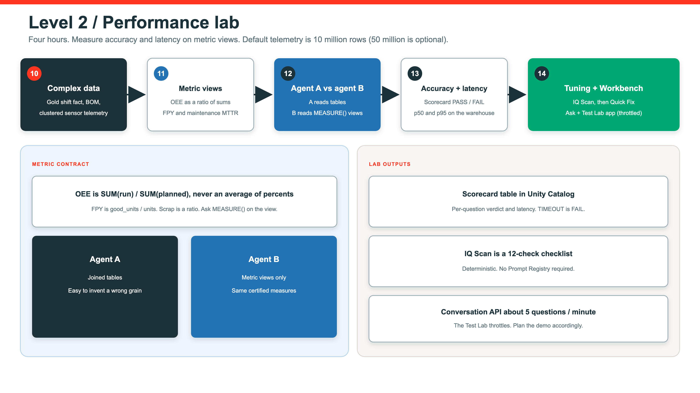

Level 2 · 4 hours · Apex Precision Manufacturing
A standalone lab for data engineers and solution architects. You compare table joins to certified measures, then score accuracy and latency.
Lab journey
Complex data
Metric views
A vs B agents
Scorecard
Tune layout
IQ Scan
Ask + Test Lab
10_complex_data → 11_metric_views → 12_agent_v2 → 13_accuracy_and_latency → 14_performance_tuning → Workbench → app.Scale the model
10 million rows by default. Optional 50 million if the warehouse can take it.
Line identity changes over time. Joins must pick the right version.
Part explosion and vendor grain. Easy to double-count.
Maintenance and production share keys. Grain is the trap.
Certified measures
Availability × performance × quality. Always a ratio of sums, never an average of percents.
First-pass yield at the certified grain. Do not average line percents.
MTBF and related measures from work orders, not ad-hoc SQL in the agent.
A versus B

Scorecard
Tune after evidence
Cluster on the join and filter keys the scorecard actually uses.
Move size only if p95 is the problem, not accuracy.
Fix measures and grain before you add cache folklore.
Same 25 questions. Keep the before and after scorecard.
Workbench
12 checks on instructions, examples, joins, and benchmarks. Deterministic. No Prompt Registry.
Suggested patches for failing checks. You read them. You apply them.
Rescan, then rerun the 25-question scorecard. Nothing writes itself into prod.
Close the lab
Deploy level-2-performance-lab/app/ or vibe-code from vibe/PROMPT.md.
Conversation API is about 5 questions per minute. The app must throttle or you will see false TIMEOUTs.